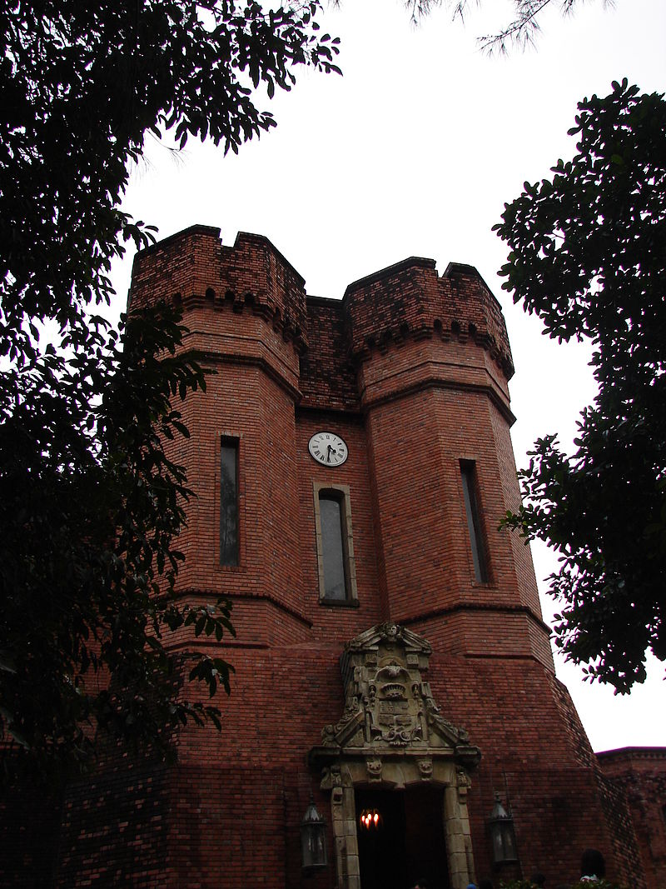

Recife é um município brasileiro, capital do estado de Pernambuco, localizado na Região Nordeste do país. Com área territorial de aproximadamente 218 km², é formado por uma planície aluvial, tendo as ilhas, penínsulas e manguezais como suas principais características geográficas.
A capital pernambucana tem, num raio de 300 km, três capitais estaduais sob sua influência direta: João Pessoa (122 km), Maceió (257 km) e Natal (286 km).
A Praça Rio Branco, também conhecida como Marco Zero, é um espaço público localizado no bairro do Recife da cidade homônima, capital de Pernambuco. No início do século passado, o centro do Recife passou por drásticas reformas, com projetos de higienização urbana e melhoramento das condições do Porto do Recife. Na prática, a higienização social se traduziu em desapropriações de pelo menos 480 imóveis que foram demolidos para a abertura das três novas avenidas no Bairro. Em um relato de Mário Sette podemos ter uma descrição do caso
Com esta grande reforma, profundas modificações foram feitas no bairro e na praça, como a demolição da Matriz do Corpo Santo e a abertura de novas e largas avenidas. No local onde estava a igreja, está edificado o edifício Maurício de Nassau, de características modernas e fachadas em vidro. Ao seu lado foram construídos os prédios da Associação Comercial de Pernambuco e a Bolsa de Valores. Estes dois prédios apresentam, em sua arquitetura, nítida influência francesa que se caracteriza pela mistura de diversos elementos construtivos, além do armazém 10 e 12 que serviam ao porto do Recife para estoque de açúcar. Estes prédios, hoje, abrigam a sede do Grupo Industrial João Santos, o Santander Cultural, a Associação Comercial de Pernambuco, a Caixa Cultural e o Centro de Artesanato de Pernambuco, considerado o maior do segmento no Brasil. Em 1999 a praça que existia no local recebeu severas modificações. O busto do Barão do Rio Branco e o Marco Zero foram realocados para a borda da praça. A "nova praça" foi projetada pelo pintor Cícero Dias, em 1999. No seu centro se encontra uma enorme obra de arte feita por ele. Inspirado em sua obra Eu vi o mundo e ele começava no Recife, criou um grande circulo com uma Rosa dos Ventos no centro. A obra tem em média 10m de raio.


O Instituto foi fundado por Ricardo Coimbra de Almeida Brennand, empresário e colecionador pernambucano de ascendência inglesa, nascido em Cabo de Santo Agostinho em 1927. Ricardo Brennand obteve destaque na indústria canavieira da região Nordeste, atuando também nos segmentos de produção de cimento, azulejo, vidro, porcelana e aço. Na década de 1940, começou a colecionar armaria, sobretudo armas brancas, consolidando nas décadas seguintes o que viria a ser um dos maiores acervos privados dessa tipologia no mundo
Na década de 1990, Ricardo decidiu investir o capital resultante da venda de parte de suas fábricas na criação de uma fundação cultural voltada à preservação e exposição de seu acervo. Ainda antes da inauguração do instituto, começou a adquirir obras de arte e objetos relacionados à história do Brasil, sobretudo aos anos de ocupação holandesa da região Nordeste. Em poucos anos, Ricardo passou a adquirir pinturas de Frans Post, além de paisagens e retratos seiscentistas, mapas, tapeçarias, moedas, documentos, livros raros e outros objetos referentes a essa temática.
O Instituto Ricardo Brennand foi inaugurado em setembro de 2002, com a exposição itinerante Albert Eckhout volta ao Brasil (também montada na Pinacoteca do Estado de São Paulo, no Conjunto Cultural da Caixa de Brasília e no Paço Imperial do Rio de Janeiro), que apresentou pela primeira vez ao público brasileiro o conjunto completo das pinturas de Eckhout pertencentes ao Museu Nacional da Dinamarca. No ano seguinte, o instituto inaugurou a exposição permanente Frans Post e o Brasil holandês na Coleção do Instituto Ricardo Brennand, com a presença da rainha Beatriz dos Países Baixos, do príncipe Guilherme Alexandre e da princesa Máxima Zorreguieta.
Além das exposições permanentes e temporárias, o Instituto oferece visitas educativas, cursos de história da arte, programa educativo voltado aos alunos dos sistemas público e privado de ensino, programas de arte-educação para professores e atividades culturais em geral.
Em 2014 e 2015 foi eleito o melhor museu da América do Sul e o 17º do mundo pelos usuários do TripAdvisor.
Existe vários locais no Instituto Ricardo Brennand que são inteiramente interessantes e repleto de história que podemos visitar como:
O Instituto Ricardo Brennand está sediado em um complexo de edifícios, inspirado no estilo Tudor, com área construída de 77 000 metros quadrados. É uma construção contemporânea, combinada com alguns elementos decorativos originais, tais como uma ponte levadiça, relevos de brasões e um altar em estilo gótico. O complexo engloba o Museu de Armas Brancas (Castelo São João da Várzea), Pinacoteca, Galeria de Exposições Temporárias, Auditório com capacidade para 120 pessoas, áreas de serviço para os visitantes, reserva técnica e espaços técnico-administrativos. Cercando o complexo, há um vasto parque com uma área de 18.000 hectares, dotado de lagos artificiais e esculturas em grande escala, tais como a obra original de O Pensador de Auguste Rodin, uma cópia de David de Michelangelo, A Dama e o Cavalo de Fernando Botero e outras peças de Sonia Ebling e Leopoldo Martins, Antônio Frilli, Mestre Valentim entre outros

Possui uma das mais modernas pinacotecas do Brasil, também construída obedecendo ao estilo gótico Tudor (1485-1603), com auditório para 120 pessoas, podendo abrigar em seus salões simultaneamente duas mostras de grande porte. Inaugurada com a exposição itinerante Albert Eckhout volta ao Brasil (1644 – 2002), a pinacoteca possui e conta com equipamentos de alta tecnologia para preservação de umidade, temperatura e luminosidade. Através de um sofisticado sistema é feito o controle rigoroso da temperatura ambiente, além do monitoramento de portas, portões e janelas, permitindo o envio de imagens 24 horas por dia para qualquer parte do mundo. Com tamanha infraestrutura, o Instituto Ricardo Brennand integrou Pernambuco na rota das grandes exposições internacionais. É na pinacoteca que o visitante encontrará as duas principais exposições de pinturas do acervo do Instituto com a exposição de Frans Post e o Brasil Holandês, que possui a maior coleção de pinturas do mundo do primeiro pintor da paisagem brasileira, bem como a Exposição o Oitocentos Brasileiros, que possui uma diversa coleção de paisagens de várias cidades do Brasil, entre elas Santos, Recife, Rio de Janeiro e Fernando de Noronha.
Inaugurada no ano 2011, a Galeria foi o mais recente módulo do Instituto que, juntamente com o Castelo de São João e a Pinacoteca, formam o conjunto de prédios em estilo gótico Tudor. Com uma área de exposições calculada em 992 metros quadrados, dispondo de todo um equipamento de apoio destinado a realização de grandes eventos, a Galeria destina-se a exposições itinerantes e de peças conservadas na Reserva Técnica, bem como reuniões sociais. No seu interior, além de esculturas em mármore representando as quatro estações (cópias das existentes nos jardins do Palácio de Versalhes), o visitante encontrará uma réplica em dimensões originais de O Pensador, fundida em bronze patinado, obra máxima de Auguste Rodin, autenticada pela Casa Rodin de Paris com a marca 8/24.
